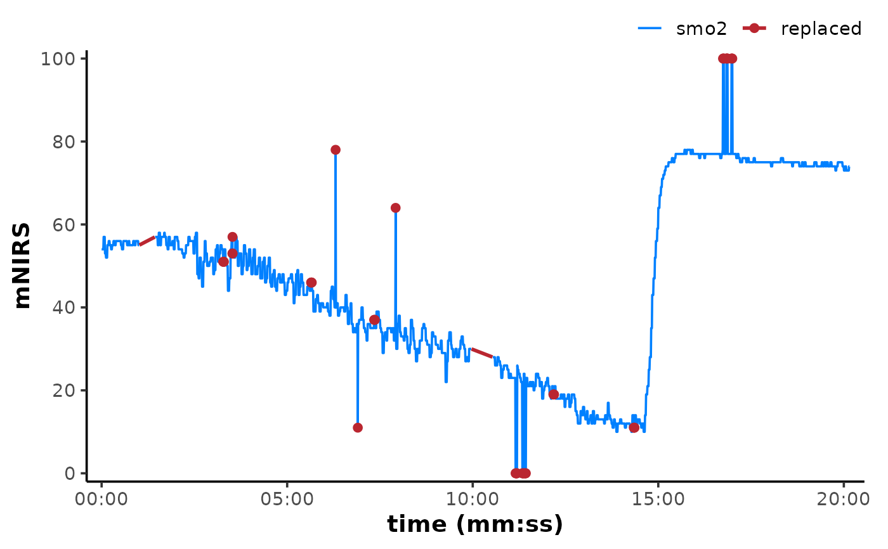

Replace outliers, invalid, and missing values in mnirs data
Source:R/replace_mnirs.R
replace_mnirs.RdDetect and replace local outliers, specified invalid values, and missing
NA values across nirs_channels within an "mnirs" data frame.
replace_mnirs() operates on a data frame, extending the vectorised
functions:.
replace_invalid() detects specified invalid values or range cutoffs in a
numeric vector and replace them with the local median value or NA.
replace_outliers() detects local outliers in a numeric vector using a Hampel filter and replaces with the local median value or NA.
replace_missing() detects missing (NA) values in a numeric vector and
replaces via interpolation.
Usage
replace_mnirs(
data,
nirs_channels = NULL,
time_channel = NULL,
invalid_values = NULL,
invalid_above = NULL,
invalid_below = NULL,
outlier_cutoff = NULL,
width = NULL,
span = NULL,
method = c("linear", "median", "locf", "none"),
verbose = TRUE
)
replace_invalid(
x,
t = seq_along(x),
invalid_values = NULL,
invalid_above = NULL,
invalid_below = NULL,
width = NULL,
span = NULL,
method = c("median", "none"),
bypass_checks = FALSE,
verbose = TRUE
)
replace_outliers(
x,
t = seq_along(x),
outlier_cutoff = 3,
width = NULL,
span = NULL,
method = c("median", "none"),
bypass_checks = FALSE,
verbose = TRUE
)
replace_missing(
x,
t = seq_along(x),
width = NULL,
span = NULL,
method = c("linear", "median", "locf"),
bypass_checks = FALSE,
verbose = TRUE,
...
)Arguments
- data
A data frame of class "mnirs" containing time series data and metadata.
- nirs_channels
A character vector giving the names of mNIRS columns to operate on. Must match column names in
dataexactly.If
NULL(default), thenirs_channelsmetadata attribute ofdatais used.
- time_channel
A character string giving the name of the time or sample column. Must match a column name in
dataexactly.If
NULL(default), thetime_channelmetadata attribute ofdatais used.
- invalid_values
A numeric vector of invalid values to be replaced, e.g.
invalid_values = c(0, 100, 102.3). DefaultNULLwill not replace invalid values.- invalid_above, invalid_below
Numeric values each specifying cutoff values, above or below which (respectively) will be replaced, inclusive of the specified cutoff values.
- outlier_cutoff
A numeric value for the local outlier threshold, as the number of standard deviations from the local median.
Default
NULLwill not replace outliers.Lower values are more sensitive and flag more outliers; higher values are more conservative.
outlier_cutoff = 3Pearson's 3 sigma edit rule.outlier_cutoff = 2approximates a Tukey-style 1.5×IQR rule.outlier_cutoff = 0Tukey's median filter.
- width
An integer defining the local window in number of samples centred on
idx, between[idx - floor(width/2), idx + floor(width/2)].- span
A numeric value defining the local window timespan around
idxin units oftime_channelort, between[t - span/2, t + span/2].- method
A character string indicating how to handle
NAreplacement (see Details):"linear"Replaces
NAs via linear interpolation (the default) usingstats::approx()."median"Replaces
NAs with the local median of valid values within a centred window defined bywidthorspan."locf""Last observation carried forward". Replaces
NAs with the most recent valid value to the left for trailingNAs or to the right for leadingNAs, usingstats::approx()."none"Returns
NAs without replacement.
- verbose
Logical. Default is
TRUE. Will display or silence (ifFALSE) warnings and information messages helpful for troubleshooting. A global default can be set viaoptions(mnirs.verbose = FALSE).- x
A numeric vector of the response variable.
- t
An optional numeric vector of the predictor variable (time or sample number). Default is
seq_along(x).- bypass_checks
Logical allowing wrapper functions to bypass redundant checks and validations.
- ...
Additional arguments.
Value
replace_mnirs() return a tibble of
class "mnirs" with metadata available via attributes().
replace_invalid() returns a numeric vector the same length as
x with invalid values replaced.
replace_outliers() returns a numeric vector the same length as
x with outliers replaced.
replace_missing() returns a numeric vector the same length as
x with missing values replaced.
Details
Automatic channel detection
nirs_channels and time_channel are retrieved automatically from
"mnirs" metadata if not specified explicitly. Columns in data not
listed in nirs_channels are passed through unprocessed.
The rolling window
replace_outliers() and replace_missing() (when method = "median")
operate over a local rolling window for outlier detection and median
interpolation. The window is specified by either width as the number
of samples, or span as the timespan in units of time_channel.
A partial window is calculated at the edges of the data.
Replace invalid values with with replace_invalid()
Specific invalid_values can be replaced, such as c(0, 100, 102.3).
Data ranges can be replaced with cutoff values specified by invalid_above
and invalid_below, where any values higher or lower than the specified
cutoff values (respectively) will be replaced, inclusive of the cutoff
values themselves.
Outlier detection with replace_outliers()
Rolling local medians are computed across x within a window defined
by width (number of samples) or span (timespan in units of t).
Outliers are detected with robust median absolute deviation (MAD),
adapted from pracma::hampel(). Deviations equal to or less than the
smallest absolute time series difference in x are excluded, to avoid
flagging negligible differences where local data have minimal or zero
variation.
Replacement behaviour
Values of x outside the local bounds defined by outlier_cutoff are
identified as outliers and either replaced with the local median
(method = "median", the default) or set to NA (method = "none").
Existing NA values in x are not replaced. They are passed
through to the returned vector. See replace_missing().
Choosing outlier_cutoff
outlier_cutoff is the number of (MAD-normalised) standard deviations
from the local median. Higher values are more conservative; lower
values flag more outliers.
outlier_cutoff = 3— Pearson's 3 sigma edit rule (default).outlier_cutoff = 2— approximately Tukey-style 1.5×IQR rule.outlier_cutoff = 0— Tukey's median filter (every point replaced by local median).
Interpolation with replace_missing()
method = "linear" and method = "locf" use stats::approx() with
rule = 2, so leading NAs are filled by "nocb"
("next observation carried backward") and trailing NAs by "locf".
method = "median" calculates the local median of valid (non-NA)
values to either side of NAs, within a window defined by width
(number of samples) or span (timespan in units of t). Sequential
NAs are all replaced by the same median value.
Edge behaviour for method = "median"
If there are no valid values within span to one side of the NA,
the median of the other side is used (i.e. for leading and trailing
NAs). If there are no valid values within either side, the first
valid sample on either side is used (equivalent to
replace_missing(x, width = 1)).
Examples
## vectorised operations
x <- c(1, 999, 3, 4, 999, 6)
replace_invalid(x, invalid_values = 999, width = 3, method = "median")
#> [1] 1 2 3 4 5 6
(x_na <- replace_outliers(x, outlier_cutoff = 3, width = 3, method = "none"))
#> [1] 1 NA 3 4 NA 6
replace_missing(x_na, method = "linear")
#> [1] 1 2 3 4 5 6
## read example data
data <- read_mnirs(
file_path = example_mnirs("moxy_ramp"),
nirs_channels = c(smo2 = "SmO2 Live"),
time_channel = c(time = "hh:mm:ss"),
verbose = FALSE
)
## clean data
data_clean <- replace_mnirs(
data, ## channels retrieved from metadata
invalid_values = 0, ## known invalid values in the data
invalid_above = 90, ## remove data spikes above 90
outlier_cutoff = 3, ## Pearson's 3 sigma edit rule
width = 10, ## window for outlier detection and interpolation
method = "linear" ## linear interpolation over NAs
)
# \donttest{
if (requireNamespace("ggplot2", quietly = TRUE)) {
## plot original and show where values have been replaced
## ignore warning about replacing the existing colour scale
plot(data, time_labels = TRUE) +
ggplot2::scale_colour_manual(
name = NULL,
breaks = c("smo2", "replaced"),
values = palette_mnirs(2)
) +
ggplot2::geom_point(
data = data[data_clean$smo2 != data$smo2, ],
ggplot2::aes(y = smo2, colour = "replaced"),
na.rm = TRUE
) +
ggplot2::geom_line(
data = {
data_clean[!is.na(data$smo2), "smo2"] <- NA
data_clean
},
ggplot2::aes(y = smo2, colour = "replaced"),
linewidth = 1, na.rm = TRUE
)
}
#> Scale for colour is already present.
#> Adding another scale for colour, which will replace the existing scale.

# }